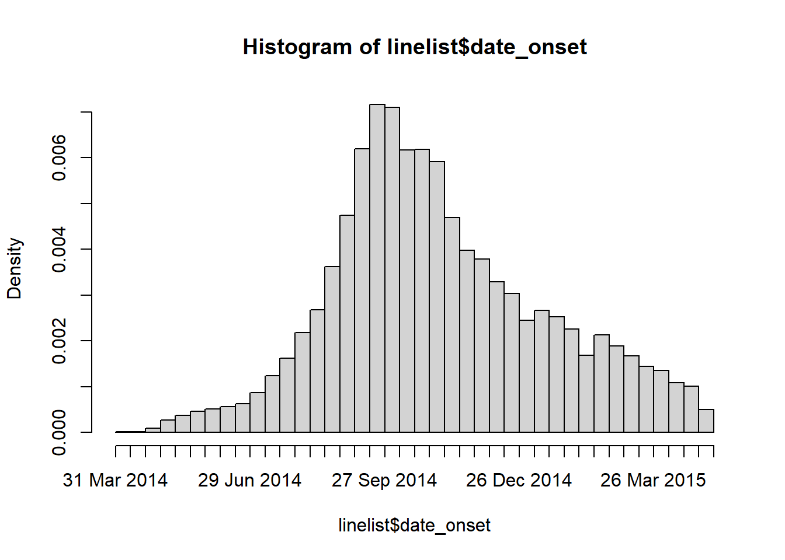

linelist <- import("linelist_cleaned.rds")Basic Data Operations
Extended Materials
You can find the original, extended version of this chapter here.
Select or re-order columns
Use select() from dplyr to select the columns you want to retain, and to specify their order in the data frame.
Here are ALL the column names in the linelist at this point in the cleaning pipe chain:
names(linelist) [1] "case_id" "generation" "date_infection"
[4] "date_onset" "date_hospitalisation" "date_outcome"
[7] "outcome" "gender" "age"
[10] "age_unit" "age_years" "age_cat"
[13] "age_cat5" "hospital" "lon"
[16] "lat" "infector" "source"
[19] "wt_kg" "ht_cm" "ct_blood"
[22] "fever" "chills" "cough"
[25] "aches" "vomit" "temp"
[28] "time_admission" "bmi" "days_onset_hosp" Keep columns
Select only the columns you want to remain
Put their names in the select() command, with no quotation marks. They will appear in the data frame in the order you provide. Note that if you include a column that does not exist, R will return an error (see use of any_of() below if you want no error in this situation).
# linelist dataset is piped through select() command, and names() prints just the column names
linelist %>%
select(case_id, date_onset, date_hospitalisation, fever) %>%
names() # display the column names[1] "case_id" "date_onset" "date_hospitalisation"
[4] "fever" Remove columns
Indicate which columns to remove by placing a minus symbol “-” in front of the column name (e.g. select(-outcome)), or a vector of column names (as below). All other columns will be retained.
linelist %>%
select(-c(date_onset, fever:vomit)) %>% # remove date_onset and all columns from fever to vomit
names() [1] "case_id" "generation" "date_infection"
[4] "date_hospitalisation" "date_outcome" "outcome"
[7] "gender" "age" "age_unit"
[10] "age_years" "age_cat" "age_cat5"
[13] "hospital" "lon" "lat"
[16] "infector" "source" "wt_kg"
[19] "ht_cm" "ct_blood" "temp"
[22] "time_admission" "bmi" "days_onset_hosp" You can also remove a column using base R syntax, by defining it as NULL. For example:
linelist$date_onset <- NULL # deletes column with base R syntax Standalone
select() can also be used as an independent command (not in a pipe chain). In this case, the first argument is the original dataframe to be operated upon.
# Create a new linelist with id and age-related columns
linelist_age <- select(linelist, case_id, contains("age"))
# display the column names
names(linelist_age)[1] "case_id" "age" "age_unit" "age_years" "age_cat" "age_cat5" Column creation and transformation
In addition to selecting columns, we can create new columns with mutate(). The syntax is: mutate(new_column_name = value or transformation). mutate() can also be used to modify an existing column.
New columns
The most basic mutate() command to create a new column might look like this. It creates a new column new_col where the value in every row is 10.
linelist <- linelist %>%
mutate(new_col = 10)You can also reference values in other columns, to perform calculations. Below, a new column bmi is created to hold the Body Mass Index (BMI) for each case - as calculated using the formula BMI = kg/m^2, using column ht_cm and column wt_kg.
linelist <- linelist %>%
mutate(bmi = wt_kg / (ht_cm/100)^2)If creating multiple new columns, separate each with a comma and new line. Below are examples of new columns, including ones that consist of values from other columns combined using str_glue() from the stringr package.
new_col_demo <- linelist %>%
mutate(
new_var_dup = case_id, # new column = duplicate/copy another existing column
new_var_static = 7, # new column = all values the same
new_var_static = new_var_static + 5, # you can overwrite a column, and it can be a calculation using other variables
new_var_paste = stringr::str_glue("{hospital} on ({date_hospitalisation})") # new column = pasting together values from other columns
) %>%
select(case_id, hospital, date_hospitalisation, contains("new")) # show only new columns, for demonstration purposesReview the new columns. For demonstration purposes, only the new columns and the columns used to create them are shown:
case_id hospital date_hospitalisation
1 5fe599 Other 2014-05-15
2 8689b7 Missing 2014-05-14
3 11f8ea St. Mark's Maternity Hospital (SMMH) 2014-05-18
4 b8812a Port Hospital 2014-05-20
5 893f25 Military Hospital 2014-05-22
6 be99c8 Port Hospital 2014-05-23
7 07e3e8 Missing 2014-05-29
8 369449 Missing 2014-06-03
9 f393b4 Missing 2014-06-06
10 1389ca Missing 2014-06-07
11 2978ac Port Hospital 2014-06-08
12 57a565 Military Hospital 2014-06-15
13 fc15ef Missing 2014-06-17
14 2eaa9a Missing 2014-06-17
15 bbfa93 Other 2014-06-20
16 c97dd9 Port Hospital 2014-06-19
17 f50e8a Port Hospital 2014-06-23
18 3a7673 Port Hospital 2014-06-24
19 7f5a01 Missing 2014-06-27
20 ddddee Other 2014-06-28
21 99e8fa Port Hospital 2014-06-29
22 567136 Port Hospital 2014-07-03
23 9371a9 St. Mark's Maternity Hospital (SMMH) 2014-07-09
24 bc2adf Missing 2014-07-09
25 403057 Other 2014-07-11
26 8bd1e8 Missing 2014-07-11
27 f327be St. Mark's Maternity Hospital (SMMH) 2014-07-13
28 42e1a9 Military Hospital 2014-07-14
29 90e5fe Port Hospital 2014-07-14
30 959170 Central Hospital 2014-07-13
31 8ebf6e Military Hospital 2014-07-14
32 e56412 Central Hospital 2014-07-17
33 6d788e Missing 2014-07-17
34 a47529 Military Hospital 2014-07-18
35 67be4e Other 2014-07-19
36 da8ecb Missing 2014-07-20
37 148f18 Missing 2014-07-20
38 2cb9a5 Port Hospital 2014-07-22
39 f5c142 Port Hospital 2014-07-24
40 70a9fe Port Hospital 2014-07-26
41 3ad520 Missing 2014-07-24
42 062638 Central Hospital 2014-07-27
43 c76676 Military Hospital 2014-07-25
44 baacc1 Other 2014-07-27
45 497372 Other 2014-07-31
46 23e499 Other 2014-08-01
47 38cc4a Missing 2014-08-03
48 3789ee St. Mark's Maternity Hospital (SMMH) 2014-08-02
49 c71dcd St. Mark's Maternity Hospital (SMMH) 2014-08-02
50 6b70f0 Missing 2014-08-04
new_var_dup new_var_static
1 5fe599 12
2 8689b7 12
3 11f8ea 12
4 b8812a 12
5 893f25 12
6 be99c8 12
7 07e3e8 12
8 369449 12
9 f393b4 12
10 1389ca 12
11 2978ac 12
12 57a565 12
13 fc15ef 12
14 2eaa9a 12
15 bbfa93 12
16 c97dd9 12
17 f50e8a 12
18 3a7673 12
19 7f5a01 12
20 ddddee 12
21 99e8fa 12
22 567136 12
23 9371a9 12
24 bc2adf 12
25 403057 12
26 8bd1e8 12
27 f327be 12
28 42e1a9 12
29 90e5fe 12
30 959170 12
31 8ebf6e 12
32 e56412 12
33 6d788e 12
34 a47529 12
35 67be4e 12
36 da8ecb 12
37 148f18 12
38 2cb9a5 12
39 f5c142 12
40 70a9fe 12
41 3ad520 12
42 062638 12
43 c76676 12
44 baacc1 12
45 497372 12
46 23e499 12
47 38cc4a 12
48 3789ee 12
49 c71dcd 12
50 6b70f0 12
new_var_paste
1 Other on (2014-05-15)
2 Missing on (2014-05-14)
3 St. Mark's Maternity Hospital (SMMH) on (2014-05-18)
4 Port Hospital on (2014-05-20)
5 Military Hospital on (2014-05-22)
6 Port Hospital on (2014-05-23)
7 Missing on (2014-05-29)
8 Missing on (2014-06-03)
9 Missing on (2014-06-06)
10 Missing on (2014-06-07)
11 Port Hospital on (2014-06-08)
12 Military Hospital on (2014-06-15)
13 Missing on (2014-06-17)
14 Missing on (2014-06-17)
15 Other on (2014-06-20)
16 Port Hospital on (2014-06-19)
17 Port Hospital on (2014-06-23)
18 Port Hospital on (2014-06-24)
19 Missing on (2014-06-27)
20 Other on (2014-06-28)
21 Port Hospital on (2014-06-29)
22 Port Hospital on (2014-07-03)
23 St. Mark's Maternity Hospital (SMMH) on (2014-07-09)
24 Missing on (2014-07-09)
25 Other on (2014-07-11)
26 Missing on (2014-07-11)
27 St. Mark's Maternity Hospital (SMMH) on (2014-07-13)
28 Military Hospital on (2014-07-14)
29 Port Hospital on (2014-07-14)
30 Central Hospital on (2014-07-13)
31 Military Hospital on (2014-07-14)
32 Central Hospital on (2014-07-17)
33 Missing on (2014-07-17)
34 Military Hospital on (2014-07-18)
35 Other on (2014-07-19)
36 Missing on (2014-07-20)
37 Missing on (2014-07-20)
38 Port Hospital on (2014-07-22)
39 Port Hospital on (2014-07-24)
40 Port Hospital on (2014-07-26)
41 Missing on (2014-07-24)
42 Central Hospital on (2014-07-27)
43 Military Hospital on (2014-07-25)
44 Other on (2014-07-27)
45 Other on (2014-07-31)
46 Other on (2014-08-01)
47 Missing on (2014-08-03)
48 St. Mark's Maternity Hospital (SMMH) on (2014-08-02)
49 St. Mark's Maternity Hospital (SMMH) on (2014-08-02)
50 Missing on (2014-08-04)
Transmute
A variation on mutate() is the function transmute(). This function adds a new column just like mutate(), but also drops/removes all other columns that you do not mention within its parentheses.
Convert column class
Columns containing values that are dates, numbers, or logical values (TRUE/FALSE) will only behave as expected if they are correctly classified. There is a difference between “2” of class character and 2 of class numeric! There are ways to set column class during the import commands, but this is often cumbersome.
First, let’s run some checks on important columns to see if they are the correct class. Currently, the class of the age column is character. To perform quantitative analyses, we need these numbers to be recognized as numeric!
class(linelist$age)[1] "numeric"To resolve this, use the ability of mutate() to re-define a column with a transformation. We define the column as itself, but converted to a different class. Here is a basic example, converting or ensuring that the column age is class Numeric:
linelist <- linelist %>%
mutate(age = as.numeric(age))In a similar way, you can use as.character() and as.logical(). To convert to class Factor, you can use factor().
Filter rows
A typical cleaning step after you have cleaned the columns and re-coded values is to filter the data frame for specific rows using the dplyr verb filter().
Within filter(), specify the logic that must be TRUE for a row in the dataset to be kept. Below we show how to filter rows based on simple and complex logical conditions.
Simple filter
This simple example re-defines the dataframe linelist as itself, having filtered the rows to meet a logical condition. Only the rows where the logical statement within the parentheses evaluates to TRUE are kept.
In this example, the logical statement is gender == "f", which is asking whether the value in the column gender is equal to “f” (case sensitive).
Before the filter is applied, the number of rows in linelist is nrow(linelist).
linelist <- linelist %>%
filter(gender == "f") # keep only rows where gender is equal to "f"After the filter is applied, the number of rows in linelist is linelist %>% filter(gender == "f") %>% nrow().
Complex filter
More complex logical statements can be constructed using parentheses ( ), OR |, negate !, %in%, and AND & operators. An example is below:
Note: You can use the ! operator in front of a logical criteria to negate it. For example, !is.na(column) evaluates to true if the column value is not missing. Likewise !column %in% c("a", "b", "c") evaluates to true if the column value is not in the vector.
Examine the data
Below is a simple one-line command to create a histogram of onset dates. See that a second smaller outbreak from 2012-2013 is also included in this raw dataset. For our analyses, we want to remove entries from this earlier outbreak.
hist(linelist$date_onset, breaks = 50)
How filters handle missing numeric and date values
Can we just filter by date_onset to rows after June 2013? Caution! Applying the code filter(date_onset > as.Date("2013-06-01"))) would remove any rows in the later epidemic with a missing date of onset!
Conditions with NA
Filtering to greater than (>) or less than (<) a date or number can remove any rows with missing values (NA)! This is because NA is treated as infinitely large and small.
Standalone
Filtering can also be done as a stand-alone command (not part of a pipe chain). Like other dplyr verbs, in this case the first argument must be the dataset itself.
# dataframe <- filter(dataframe, condition(s) for rows to keep)
linelist <- filter(linelist, !is.na(case_id))You can also use base R to subset using square brackets which reflect the [rows, columns] that you want to retain.
# dataframe <- dataframe[row conditions, column conditions] (blank means keep all)
linelist <- linelist[!is.na(case_id), ]Arrange and sort
Use the dplyr function arrange() to sort or order the rows by column values.
Simple list the columns in the order they should be sorted on. Specify .by_group = TRUE if you want the sorting to to first occur by any groupings applied to the data.
By default, column will be sorted in “ascending” order (which applies to numeric and also to character columns). You can sort a variable in “descending” order by wrapping it with desc().
Sorting data with arrange() is particularly useful when making tables for publication, using slice() to take the “top” rows per group, or setting factor level order by order of appearance.
For example, to sort the our linelist rows by hospital, then by date_onset in descending order, we would use:
linelist %>%
arrange(hospital, desc(date_onset))